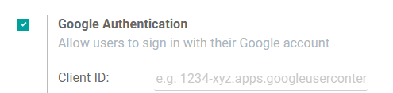

Autenticación de inicio de sesión de Google¶
La autenticación de inicio de sesión de Odoo es una función útil que permite que los usuarios de Odoo inicien sesión en su base de datos desde su cuenta de Goole.
Esto es muy útil, en especial si la empresa usa Workspace de Google y quiere que los empleados se conecten a Odoo con su cuenta de Google.
Advertencia
Las bases de datos alojadas en Odoo.com no deben usar el inicio se sesión de Oauth si es el propietario o administrador de la misma, pues podría desvincular la base de datos de su cuenta de Odoo.com. Si Oauth está establecido para ese usuario, la base de datos ya no se podrá duplicar, renombrar o administrar desde el portal de Odoo.com.
Configuración¶
Integrar el inicio de sesión de Google requiere que se configure tanto Odoo como Google.
Tablero de la API de Google¶
Vaya al tablero de la API de Google.
Asegúrese de que abrió el proyecto correcto. Si todavía no hay un proyecto, haga clic en Crear proyecto, llene el nombre del proyecto y los otros detalles de la empresa y después haga clic en Crear.

Truco
Elija el nombre de la empresa desde el menú desplegable.
OAuth pantalla de consentimiento¶
En el lado izquierdo del menú haga clic en .

Elija una de las opciones (Interno / Externo) y haga clic en Crear.

Advertencia
A las cuentas personales de Gmail solo se les permite ser el tipo de usuario externo. Esto significa que es posible que Google requiera una aprobación o que agregue alcances. Sin embargo, si usa una cuenta de Google WorkSpace podrá usar el tipo de usuario interno.
También tome en cuenta que siempre y cuando la conexión API se encuentre en el modo de prueba externo no necesitará que Google aprueba nada. El límite de usuarios en modo de prueba es 100.
Llene los detalles requeridos y la información de dominio, después haga clic en Guardar y crear.
En la página de Alcance deje todos los campos como están y después haga clic en Guardar y continuar.
Si sigue en el modo de prueba (Externo), para agregar las direcciones de correo que configuró en el paso Usuarios de prueba haga clic en Add Users (agregar usuarios) y después en el botón Save and Continue (guardr y continuar). Aparecerá un resumen del registro de la aplicación.
Finalmente, navegue al final de la página y haga clic en Back to Dashboard (volver al tablero).
Credenciales¶
En el menú del lado izquierdo haga clic en .

Haga clic en Crear credenciales, y seleccione ID de cliente de OAuth.

Seleccione Aplicación Web como Tipo de aplicación. Ahora configure las páginas permitidas a las que se va a redirigir Odoo.
Para lograrlo, en el campo de URL de redirección autorizadas ingrese el dominio de su base de datos inmediatamente seguido por
/auth_oauth/signin. Por ejemplo:https://midominio.odoo.com/auth_oauth/signiny luego haga clic en Crear.Ya que se creó el cliente OAuth, aparecerá una pantalla con el ID del cliente y el Secreto del cliente. Copie el ID del cliente para después, ya que lo necesitará para realizar la configuración en Odoo, la cual explicaremos en los siguientes pasos.
Autenticaciión de Google en Odoo¶
Recuperar el ID del cliente¶
Una vez que se completen los pasos previos, se generan dos llaves en el tablero del API de Google, ID del cliente y Secreto del cliente. Copie el ID del cliente.

Activación de Odoo¶
Vaya a y active la Autenticación OAuth.
Nota
Es posible que Odoo le pida al usuario volver a iniciar sesión después de este paso.
Regrese a , active la selección y Guarde. Después, regrese a y active la selección. Ahora llene el ID del cliente con la llave que obtuvo desde el tablero API de Google. Después haga clie en Guardar.
Nota
También puede acceder a la configuración de Google OAuth desde Proveedores OAuth abajo del título Autenticación OAuth en .
Inicie sesión en Odoo con Google¶
Para vincular su cuenta de Google con el perfil de Odoo, haga clic en Iniciar sesión con Google la primera vez que inicie sesión en Odoo.

Los usuarios existentes deben restablecer su contraseña para ir a la página de . Los usuarios nuevos puede hacer clic en Acceder con Google en lugar de elegir una nueva contraseña.